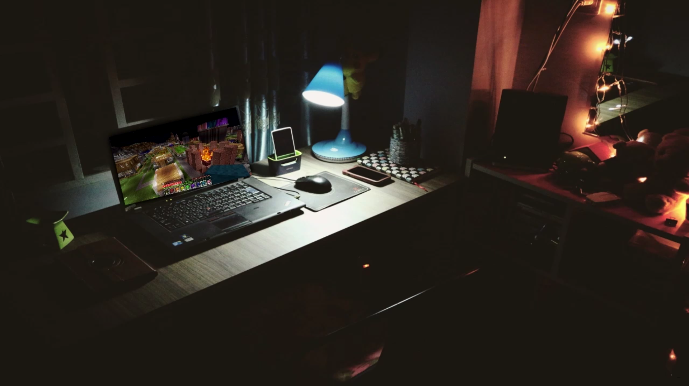

made by Vincent Soleillant
In a realm of memories, I shall delve,
Where nostalgia's whispers gently swell,
A poem I'll craft, a tale to tell,
Of days long gone, a nostalgic spell.
In whispered echoes of days gone by,
Where laughter danced, and tears did dry,
The melody of childhood's lullaby,
Oh, nostalgia's embrace, how time does fly.
With golden hues, the sun did shine,
As we roamed free, our hearts aligned,
In innocence, our dreams did bind,
A tapestry of moments, forever enshrined.
The scent of rain on a summer's eve,
The taste of ice cream, a sweet reprieve,
Oh, nostalgia's touch, how it does deceive,
Transporting us back, where memories cleave.
Through sepia filters, we find our way,
To dusty albums, where moments play,
Faded photographs, where smiles sway,
Nostalgia's embrace, forever to stay.
Oh, the bittersweet ache of days gone by,
Of friendships lost, and tears we cry,
Yet in nostalgia's grasp, we can't deny,
The beauty of moments that never truly die.
So let us dance within nostalgia's embrace,
Let memories flow, let time leave no trace,
For in the depths of our hearts, they find a place,
A poem for nostalgia, a fond embrace.
May this poem whisk you away,
To cherished moments, come what may,
Let nostalgia's melody gently sway,
As we honor the past, and live for today.
